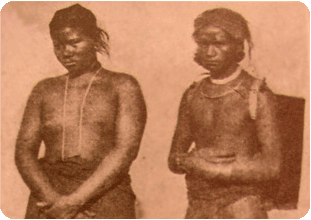

วิถีชีวิต: ชนเผ่าไทข่า

ประวัติความเป็นมา : ไทยข่า เป็นกลุ่มชาติพันธุ์หนึ่งในจังหวัดนครพนม ชาวข่ามีถิ่นกำเนิดดั้งเดิมอยู่ในแขวงสุวรรณเขตแขวงสาละวันและแขวงอัตปือของลาว
ซึ่งเมื่อร้อยปีก่อน พ.ศ. 2436 ยังเป็นแดนของราชอาณาจักรไทย ชาวข่าอพยพมาอยู่ในท้องที่จังหวัดมุกดาหารในสมัยรัชกาลที่ 3 เป็นส่วนมากนักมานุษยวิทยาถือว่าชาวข่าเป็นชนเผ่าดั้งเดิมเผ่าหนึ่งในแถบลุ่มแม่น้ำโขง
ซึ่งอาจจะสืบเชื้อสายมาจากขอมโบราณซึ่งเคยอยู่ในดินแดนของอาณาจักรเจนละ ต่อมาเป็นอานาจักรขอมและอาณาจักรศรีโคตรบูร ที่ขอมเคยมีอิทธิพลครอบคลุมมาถึงแล้วเสื่อมอำนาจลง
ซึ่งพวกข่าอยู่ในตระกูลเดียวกับขอมและมอญเขมรชาวไทยข่าบ้านโสกแมวในอดีตนั้น ได้อพยพมาจากฝั่งซ้ายของแม่น้ำโขงหรือ ประเทศสาธารณรัฐประชาธิปไตยประชาชนลาวในปัจจุบัน
เนื่องจากหนีภัยความเดือดร้อนของสงครามมาในสมัยรัชกาลที่ 3 ราว พ.ศ. 2375 - 2380 และเมื่อตั้งบ้านอยู่ในระยะหนึ่ง ก็ต้องอพยพย้ายบ้านอีกจนกระทั่ง ได้มาตั้งในที่ปัจจุบันแห่งนี้
คำว่า “โสกแมว” มาจากที่บริเวณที่ตั้งเสาหลักบ้านเกิดเป็นบ่อหรือหลุมลึก (ภาษาถิ่นเรียกว่า โสก) ในคืนเดือนหงายมักจะมีเสียงร้องของแมวดังไปทั่วบริเวณแต่ว่าไม่เห็นตัวแมว จึงเรียกชื่อบ้านโสกแมวตั้งแต่นั้นเป็นต้นมา
แหล่งท่องเที่ยวชุมชน และท่องเที่ยวเชิงวัฒนธรรม
เรียนรู้สัมผัสวัฒนธรรมไทยข่า ที่ ศูนย์เรียนรู้วัฒนธรรมไทยข่า และวัดโคกสว่าง เรียนรู้ภาษาถิ่นที่โรงเรียนบ้านโสกแมว กิจกรรมนั่งรถอีแต๊ะสนุกรู้กับฐานท่องเที่ยววิถีชีวิตชนเผ่า
1. บ่อนเจาะม่วนตานซิ่นได (ฐานปลูกม่อนเลี้ยงไหม)
2. บ่อนกะมูนมันตานซิ่นหมี่ (ฐานกะมูนมัยผ้ามัดหมี่)
3. บ่อนขีดหยะพาราวินบลู (ฐานกรีดยางพาราแดนอีสาน)
4. บ่อนตะกัวเบิดเอิดเบิดจา (ฐานผสมผสานความเพียงพอ)
5. บ่อนตานเตอะอะบึกตานเดาดอย (ฐานจัดสานไม้ไผ่)
6. บ่อนดำเนียตะละไลโจ๊ะบัดโจ๊ะมายจา (ฐานทำนำ)
7. อรัวะอรัวะอะจีนบรูแอมแอม (สนุกรู้อาหารถิ่น)
การประกอบอาชีพ
มีราษฎรอาศัยอยู่ 1,276 คน เป็นชาย 593 คน เป็นหญิง 683 คน ส่วนใหญ่ประกอบอาชีพทำนา เลี้ยงสัตว์ ทำไร่ และรับจ้างทั่วไป
ความเชื่อ ประเพณี ความสำคัญ
ความเชื่อของไทยข่านั้นลักษณะความเชื่อที่ผสมผสานระหว่าง ผี พุทธ พราหมณ์ มีความผูกพันกับวิถีชีวิต และธรรมชาติสิ่งแวดล้อมของชาวบ้านที่หล่อหลอมเป็นเอกลักษณ์เฉพาะตัว
โดยแสดงออกผ่านวิถีชีวิต พิธีกรรม และงานบุญประเพณีต่างๆ ของหมู่บ้าน ที่จะนำไปสู่ความเข้าใจในการอยู่ร่วมกันอย่างมีความสุข
พิธีซางกะมู่ย หรือ แซงกะมูล ภาษาข่า ซางหรือแซง แปลว่า แบบแผน กะมู่ย แปลว่า ผี หมายถึง พิธีที่จัดทำให้เรียบร้อยอย่างมีแบบแผนนั่นเอง ดังนั้น ในพิธีซางกะมู่ย จึงเป็นพิธีในการจัดการเรื่องผีให้เป็นระเบียบแบบแผน
ก่อนที่จะนำไปฝัง หรือเผานั่นเอง เนื่องจากชาวข่าเชื่อว่า คนตายยังเป็นผีดิบที่มีอันตรายค่อนข้างร้ายแรงต่อญาติ และคนอื่น ๆ จะต้องทำพิธีซางกะมู่ย เพื่อให้ผีดิบกลายเป็น “ผีสุก” เสียก่อน
เพื่อจะได้เป็นผีเรือนเข้ากับบรรพบุรุษและมาช่วยเหลือลูกหลานให้อยู่กันอย่างร่มเย็นเป็นสุขได้ ผู้ร่วมพิธีจะเป็นญาติร่วมตระกูลเดียวกัน
ประเพณีไหว้ผีปู่ตา ประเพณีไหว้ผีปู่ตานั้นจะทำทุกวัน ขึ้น 3 ค่ำเดือน 3 ผู้ได้รับการแต่ง ตั้งให้เป็นเจ้าจ้ำนั้น จะมีทั้งสืบทอดลูกหลานและจากการเลือกบุคคลที่ประพฤติดีใน หมู่บ้านขึ้นมา
ในวันนั้นจะทำพิธีโดยเอาไก่มาบ้านละตัว เทียนบ้านละคู่
ความเชื่อเรื่องผีปู่ตา ผีปู่ตา ซึ่งเป็นผีของบรรพบุรุษที่มีความสำคัญมากของหมู่บ้าน ปู่ตาสามารถคุ้มครองชาวบ้านในหมู่ บ้านให้อยู่เย็นเป็นสุข ป้องกันภัยพิบัติทั้งปวงที่จะก่อให้เกิดความเดือดร้อนแก่หมู่บ้านได้
ศาลปู่ตาหรือดอนปู่ตานี้เป็นสถานที่ที่เกิดมาพร้อมกับตั้งหมู่บ้านเป็นบริเวณที่ศักดิ์ ิ์สิทธิ์ที่ทุกคนต้องเคารพยำเกรงใน บริเวณป่าปู่ตาทั้งหมด ใครจะเข้าไปบุกรุกตัดไม้ไม่ได้ เพราะถือว่าผิดผีปู่ตา
ความเชื่อเรืองผีน้ำผีฟ้า (ผีไท่ผีนาง) ผู้ที่จะติดต่อกับผีน้ำผีฟ้าได้ก็คือ หมอเหยา การจะเป็นหมอเหยาได้นั้นต้องเป็นคนที่เสียสละ มีคุณธรรมสูง มีสัจจะ ประพฤติตามฮีต - ครอง ดังคำที่ว่า กลางดึกหากมีใครมาตามให้ไปรักษาก็ต้องไป
ไม่มีค่าจ้าง ได้แต่ค่ายกครู ห้าสลึง หากใครรับเงินมากกว่านั้นก็จะเป็น ปอบ พิธีกรรมไหว้ครูครั้งใหญ่ พิธีเหยาใหญ่หรือไหว้ครูหมอเหยาจะจัดขึ้นทุก 3 ปี ถือเป็นงานใหญ่ที่สำคัญต่อหมอเหยาทุกคน
จะทำกันสองวัน สองคืน บรรยากาศจะเต็มไปด้วยการร่ายรำขับกล่อม แน่นอนว่าต้องใช้แรงกายไม่น้อยเลยทีเดียว ที่น่าสังเกตคือ หมอเหยาส่วนใหญ่จะเป็นหญิงชราแต่กลับไม่มีท่าทีเหน็ดเหนื่อยให้ได้เห็นกันเลย วิถีการกินอยู่ อาหารพื้นบ้าน
วิถีชีวิตและความเป็นอยู่ของชนเผ่าไทยข่า นั้นเป็นชุมชนเกษตรกรรม มีการเลี้ยงสัตว์และเพาะปลูกพืชตามท้องถิ่น วิถีชีวิตเป็นแบบพึ่งพาอาศัยกัน พึ่งพาธรรมชาติ ในช่วงของฤดูฝน จะทำนา เมื่อว่างจากการทำนา ผู้หญิงจะอยู่บ้านทอผ้าและดูแลลูก
ส่วนผู้ชายจะออกทำงานอย่างอื่นทางด้านอาหารการกิน เนื่องจากชาวไทยข่าอาศัยอยู่ในธรรมชาติ ดังนั้นอาหารการกินของชาวไทยข่า จึงเป็นอาหารที่หาได้จากธรรมชาติ เช่น หน่อไม้ เห็ด ปลา และพืชผักต่างๆ อาหารที่ทุกบ้านเรือนมักจะประกอบ ก็มี แกงหน่อไม้ แกงอ่อมหอย แกงปลา น้ำพริกต่างๆ ซึ่งก็ไม่มีอะไรแตกต่างจากชุมชนอื่น